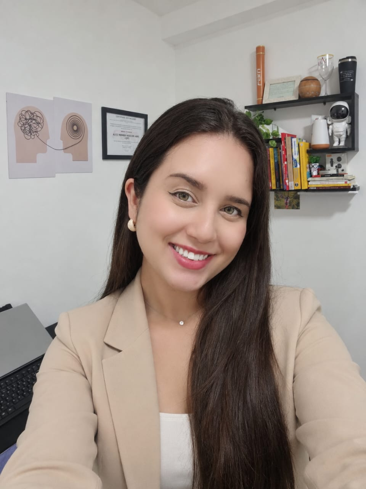
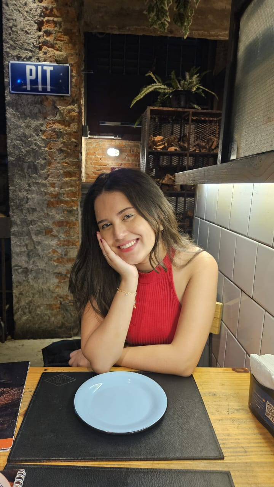

Emoções e sofrimento
Escuta para questões relacionadas à ansiedade, depressão, angústia e experiências de sofrimento emocional.
Psicoterapia online · abordagem psicanalítica
Um encontro com o que você sente, com a sua história e com as possibilidades que podem se abrir ao falar sobre si.
Alice Ferreira Pontes de Assis Pinto
Psicóloga · CRP 06/238713


Sobre a profissional
Alice Ferreira Pontes de Assis Pinto · CRP 06/238713
Sou psicóloga e acredito que cada pessoa traz uma história singular, com sentimentos, desafios e possibilidades que merecem ser escutados com atenção.
Durante a graduação, realizei atendimentos presenciais e online com adolescentes e adultos. Essa experiência fortaleceu meu interesse pela escuta clínica e pelo cuidado que respeita o tempo de cada pessoa.
Minha atuação tem orientação psicanalítica e é guiada pela ética, pela empatia e pelo respeito à singularidade.
FormaçãoGraduação em Psicologia concluída em 2026.
Conheça minha forma de trabalhar ↗Abordagem psicanalítica
A escuta psicanalítica procura compreender os sentidos que atravessam sua história, suas relações e suas experiências. O que você traz para a sessão é o ponto de partida dessa investigação.
Não é preciso chegar com um discurso organizado. Dúvidas, silêncios e sentimentos também podem fazer parte da conversa, em um processo construído ao longo dos encontros.
Sua históriaSuas relaçõesSeu tempoO atendimento
Psicoterapia online para adolescentes e adultos que desejam compreender suas emoções, suas relações e os desafios da vida.
Escuta para questões relacionadas à ansiedade, depressão, angústia e experiências de sofrimento emocional.
Um lugar para conversar sobre perdas, processos de separação e divórcio e os sentidos das suas relações.
Investigação da própria história, de conflitos e de questões que se repetem ou despertam perguntas sobre si.
Os primeiros passos
Entre em contato comigo pelo WhatsApp ou pela rede social que preferir. Podemos conversar sobre o atendimento, tirar suas dúvidas e consultar a disponibilidade de horários.
Conversar pelo WhatsApp ↗Chame pelo WhatsApp ou pelas redes sociais para saber mais sobre o atendimento e tirar suas dúvidas.
Consulte os horários disponíveis e combine diretamente comigo os detalhes do seu primeiro encontro.
Reserve um ambiente com privacidade e uma conexão estável. O atendimento online tem duração de 1 hora.
Dúvidas frequentes
Algumas informações para ajudar você a dar o próximo passo.
Você pode começar pelo que motivou a busca por atendimento ou pelas dúvidas que tem sobre o processo. Não é necessário preparar uma fala.
Os encontros acontecem online, por videochamada, com duração de 1 hora. As orientações de acesso são combinadas no agendamento.
O trabalho é voltado para adolescentes e adultos. Para atendimento de adolescentes, consulte previamente os critérios de idade e os procedimentos com responsáveis.
Os atendimentos apresentados neste site são online. Para outras possibilidades, entre em contato diretamente comigo.
Entre em contato pelo WhatsApp para consultar valores, disponibilidade e combinar o agendamento.
Vamos conversar?
Fale diretamente comigo para tirar suas dúvidas, conhecer a disponibilidade de horários e agendar seu atendimento.
Chamar no WhatsApp ↗Se preferir, você também pode consultar meu perfil no Psinow ↗.